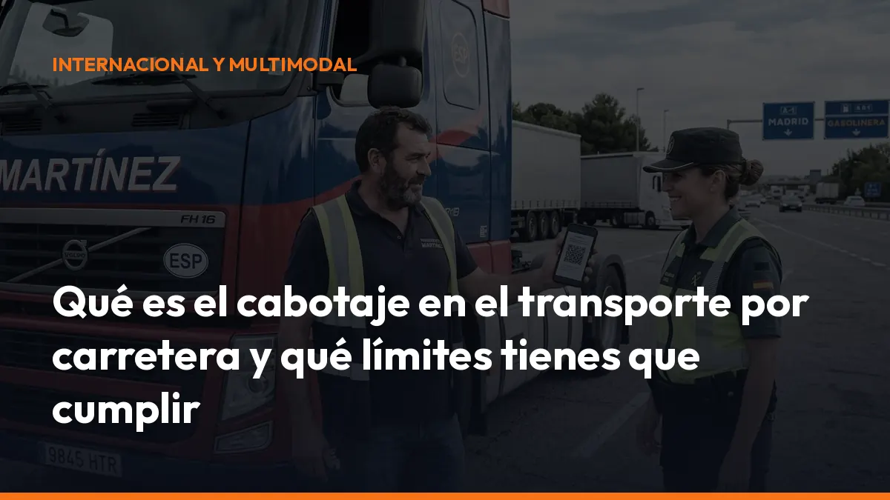

Qué es el cabotaje en el transporte por carretera y qué límites tienes que cumplir

Un error puede provocar una inmovilización del vehículo, una pérdida de tiempo en carretera y una sanción que puede alcanzar los 20.001 € en los supuestos más graves.
En esta guía te explicamos qué es el cabotaje, cuándo es legal y qué tienes que llevar a bordo.
¿Qué es el cabotaje en el transporte por carretera?
El cabotaje es un transporte nacional de mercancías realizado temporalmente en un país por una empresa de transporte establecida en otro Estado miembro de la Unión Europea o del Espacio Económico Europeo.
En la práctica, existe cabotaje cuando:
- Una empresa extranjera entra en España con mercancía procedente de otro país.
- Descarga esa mercancía en España.
- Realiza después uno o varios transportes entre puntos situados dentro de España.
- Utiliza el mismo vehículo o cabeza tractora que realizó el transporte internacional.
Por ejemplo: Una empresa de transporte francesa realiza un servicio París-Madrid. Después de descargar en Madrid, carga mercancía en Madrid y la entrega en Valencia. Ese trayecto Madrid-Valencia es una operación de cabotaje.
La definición se recoge en el Reglamento (CE) 1072/2009, que regula el acceso al mercado internacional de transporte de mercancías por carretera y sus límites.
Cabotaje y transporte internacional: no son lo mismo
La diferencia principal está en el origen y el destino del transporte.
Transporte internacional
Se produce cuando la mercancía se transporta entre dos países diferentes.
Ejemplos:
- España-Francia.
- Portugal-España.
- Alemania-Italia.
Transporte de cabotaje
Se realiza dentro de un mismo país, pero lo lleva a cabo una empresa establecida en otro país.
Ejemplos:
- Madrid-Valencia realizado por una empresa francesa.
- Barcelona-Zaragoza realizado por una empresa portuguesa.
- Sevilla-Málaga realizado por una empresa italiana.
La operación internacional es la que permite iniciar el cabotaje. Por eso, no puedes entrar en España con el vehículo vacío y comenzar a realizar transportes nacionales sin más.
Primero debe existir un transporte internacional válido. Después podrás hacer cabotaje dentro de los límites establecidos.
La regla clave: máximo 3 operaciones en 7 días
La norma general es sencilla:
Puedes realizar hasta 3 operaciones de cabotaje en un plazo máximo de 7 días.
Para que sean legales, debes cumplir todas estas condiciones:
- Transporte internacional previo: tiene que existir un transporte internacional de entrada en España.
- Mismo vehículo: las operaciones deben realizarse con el mismo vehículo de motor o la misma cabeza tractora.
- Máximo 3 operaciones: no puedes superar tres transportes nacionales.
- Plazo de 7 días: el periodo empieza a contar desde la descarga completa del transporte internacional.
- Misma trazabilidad: debes poder demostrar qué operación internacional habilitó cada cabotaje.
La cuenta se realiza desde la fecha de descarga del transporte internacional. No desde la fecha de contratación ni desde el momento en que el vehículo cruza la frontera.
Ejemplo práctico
- 1 de septiembre: descargas en Madrid un transporte procedente de Francia.
- 2 de septiembre: realizas Madrid-Valencia.
- 4 de septiembre: realizas Valencia-Barcelona.
- 6 de septiembre: realizas Barcelona-Zaragoza.
Has realizado tres operaciones dentro de los siete días permitidos. El cabotaje puede ser legal si llevas toda la documentación exigida.
Una cuarta operación dentro de ese mismo periodo ya puede considerarse cabotaje irregular.
Si el transporte internacional no termina en España
Existe un supuesto especial. Si el transporte internacional termina en otro Estado miembro y entras en España con el vehículo vacío, puedes realizar:
Una única operación de cabotaje en España durante los 3 días siguientes a la entrada en vacío.
Además, esa operación debe encontrarse dentro del periodo de siete días contado desde la descarga del transporte internacional anterior.
No confundas esta excepción con una autorización para hacer varias cargas nacionales. El límite es de una operación.
¿Qué documentación necesitas llevar en un cabotaje?
La documentación logística es tu principal defensa durante un control. Debes poder demostrar que el transporte es legal, que existe una operación internacional previa y que no has superado el límite de 3 servicios.
Lleva siempre:
1. Prueba del transporte internacional previo
Necesitas una carta de porte internacional, normalmente un CMR o eCMR, que permita acreditar:
- El origen y destino del transporte internacional.
- La mercancía transportada.
- El cargador y el transportista.
- La matrícula del vehículo.
- La fecha de carga.
- La fecha y el lugar de descarga en España.
La fecha de descarga es especialmente importante porque inicia el cómputo de los siete días.
2. Carta de porte de cada cabotaje
Cada transporte nacional debe contar con su correspondiente carta de porte o documento contractual equivalente.
Debe identificar, entre otros datos:
- Cargador.
- Transportista.
- Transportista efectivo.
- Origen y destino.
- Naturaleza de la mercancía.
- Peso o cantidad.
- Matrícula del vehículo.
- Fecha de carga.
- Precio, cuando proceda.
La carta de porte demuestra las condiciones del contrato entre las partes. No sustituye automáticamente al documento de control si no contiene toda la información administrativa exigida.
3. Documento de control administrativo o DeCA
El DeCA es el Documento de Control Administrativo del transporte nacional de mercancías. Se exige también en las operaciones de cabotaje realizadas dentro de España.
Está regulado por la Orden FOM/2861/2012 y debe incluir los datos mínimos de la operación.
En determinadas condiciones, una carta de porte, un CMR o un eCMR puede servir también como documento de control si contiene toda la información obligatoria.
Pero recuerda:
- Carta de porte: documento contractual.
- DeCA: documento administrativo para acreditar los datos del transporte ante la inspección.
Son documentos relacionados, pero no tienen exactamente la misma función.
DeCA electrónico: prepárate para el cambio
El documento de control administrativo avanza hacia un formato digital obligatorio.
Según la información normativa disponible, hasta el 5 de octubre de 2026 todavía puede utilizarse el documento de control en papel. Desde esa fecha, el DeCA electrónico será obligatorio para el transporte nacional y el cabotaje por cuenta ajena.
El documento electrónico deberá permitir su consulta durante el servicio y facilitar la comprobación de los datos por parte de la inspección.
Con una solución digital como Mi Carga, puedes preparar y gestionar tu documentación desde el móvil, la oficina o la cabina. Así reduces:
- Errores al rellenar datos.
- Documentos incompletos.
- Pérdidas de tiempo en controles.
- Dependencia del papel.
- Problemas para localizar una carta de porte antigua.
Genera, guarda y comparte tu documentación directamente desde un único entorno.
Tacógrafo obligatorio desde el 1 de julio de 2026
A partir del 1 de julio de 2026, los vehículos de más de 2,5 toneladas que realicen transporte internacional o cabotaje deberán utilizar el tacógrafo cuando estén incluidos en el ámbito de la normativa europea.
La medida afecta especialmente a los vehículos ligeros de entre 2,5 y 3,5 toneladas que hasta ahora no estaban sometidos a las mismas obligaciones que los camiones pesados.
Desde esa fecha tendrás que controlar:
- Tacógrafo inteligente: instalación y funcionamiento correcto.
- Tiempos de conducción: respeto de los límites establecidos.
- Pausas: registro correcto durante la jornada.
- Descansos: cumplimiento de los descansos diarios y semanales.
- Cruces de frontera: registro conforme a la normativa.
- Operaciones de cabotaje: trazabilidad de las cargas y descargas.
El objetivo es que las autoridades puedan comprobar con mayor precisión los desplazamientos internacionales y las operaciones nacionales realizadas por un transportista extranjero.
No esperes al último momento. Comprueba la categoría de tu vehículo, instala el equipo cuando corresponda y adapta tu gestión de rutas antes del 1 de julio de 2026.
Sanciones por hacer cabotaje ilegal
Incumplir las reglas de cabotaje puede tener consecuencias económicas y operativas importantes.
Puedes exponerte a:
- Inmovilización del vehículo.
- Multas administrativas.
- Pérdida de tiempo durante la inspección.
- Prohibición temporal de realizar cabotaje.
- Problemas con el acceso al mercado.
- Sanciones adicionales por documentación o tacógrafo.
Los incumplimientos más graves pueden calificarse como infracción muy grave y alcanzar hasta 20.001 €, según la conducta, la tipificación aplicada y las circunstancias del expediente.
La sanción no depende únicamente de haber cometido un error formal. La Administración puede valorar, entre otros aspectos:
- Si has superado las tres operaciones.
- Si has realizado cabotaje sin transporte internacional previo.
- Si no puedes demostrar la fecha de descarga.
- Si has falsificado o manipulado documentos.
- Si existe una reiteración de incumplimientos.
- Si el vehículo no utiliza el tacógrafo exigido.
- Si se ha producido competencia desleal o fraude.
Por eso, no basta con llevar “algún papel”. Necesitas una documentación coherente, completa y disponible al instante.
Checklist antes de iniciar un cabotaje
Antes de aceptar una nueva carga nacional, comprueba:
- Transporte internacional previo: ¿puedes demostrarlo con un CMR o eCMR?
- Fecha de descarga: ¿sabes exactamente cuándo terminó el transporte internacional?
- Número de operaciones: ¿cuántos cabotajes has realizado ya?
- Plazo: ¿sigues dentro de los siete días?
- Vehículo: ¿es el mismo que realizó el transporte internacional?
- Carta de porte: ¿está completa y disponible?
- DeCA: ¿incluye todos los datos administrativos obligatorios?
- Tacógrafo: ¿cumple la normativa aplicable desde el 1 de julio de 2026?
- Archivo: ¿puedes recuperar la documentación si te la solicita la inspección?
Si una respuesta es negativa, detente y corrige la documentación antes de salir.
Controla tu cabotaje sin complicaciones
El cabotaje puede ser una oportunidad para aprovechar mejor tus rutas y reducir kilómetros en vacío. Pero solo funciona si respetas la regla de 3 operaciones en 7 días, llevas la documentación correcta y cumples las nuevas obligaciones de tacógrafo.
Con Mi Carga, puedes digitalizar tus documentos de transporte, organizar tus cartas de porte y tener la información disponible desde cualquier lugar.
Sin archivadores. Sin búsquedas interminables. Sin depender de documentos perdidos en la cabina.
Solicita información sobre Mi Carga y empieza a gestionar tu documentación de transporte de forma rápida, sencilla y segura.
Fuentes consultadas
- Reglamento europeo sobre las normas de cabotaje — Comisión Europea
- Orden FOM/2181/2008 — BOE
- Orden FOM/2861/2012 sobre el documento de control — BOE
- Definición jurídica de cabotaje — Diccionario panhispánico del español jurídico
- Información sobre transporte de cabotaje por carretera
Genera tus 10 primeros documentos gratis con Mi Carga
DeCA, carta de porte y ADR, en PDF, con QR y archivo automático en la nube.
Empezar con 10 documentos gratisArtículo informativo. Consulta siempre el caso concreto de tu operación. ¿Dudas? Escríbenos.